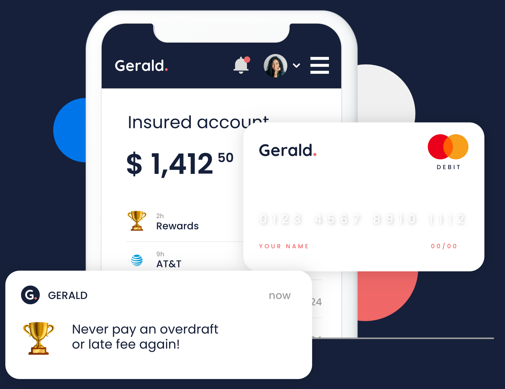
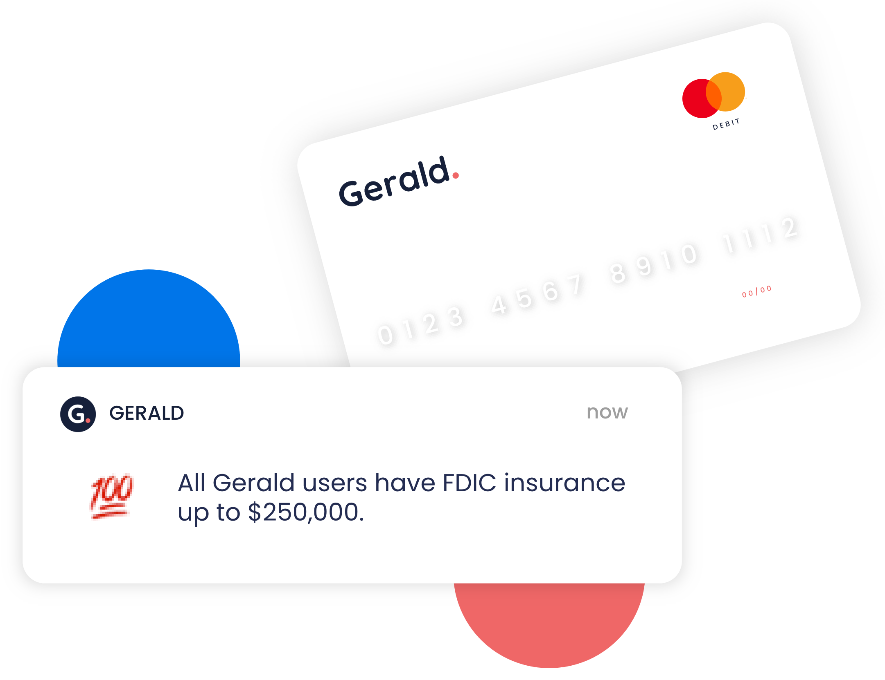
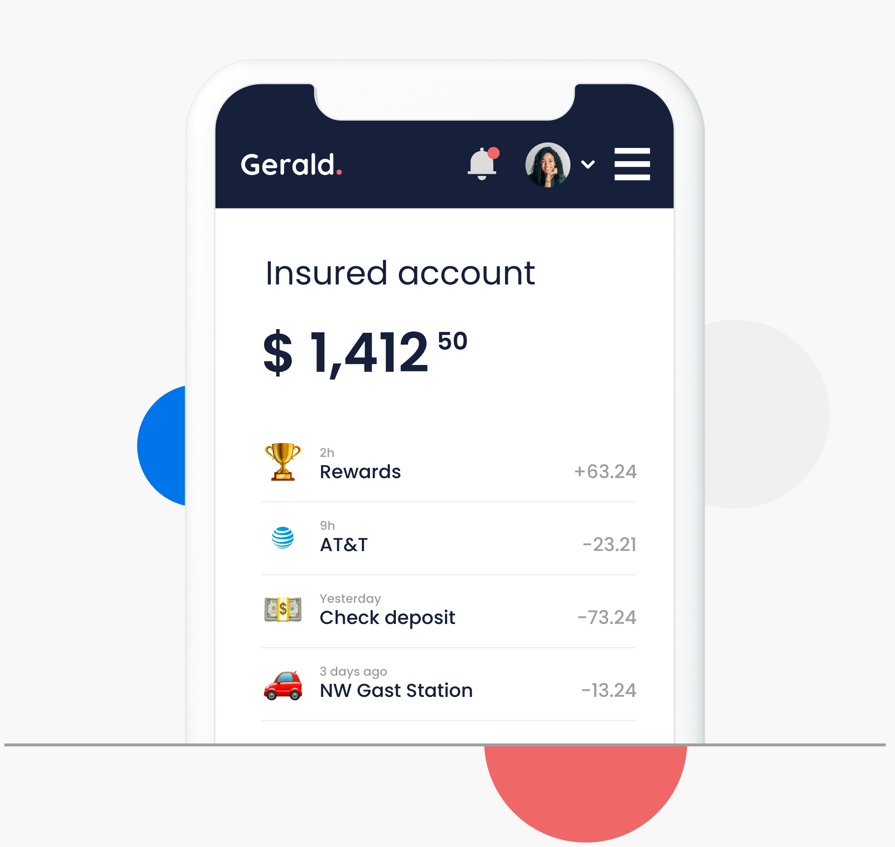
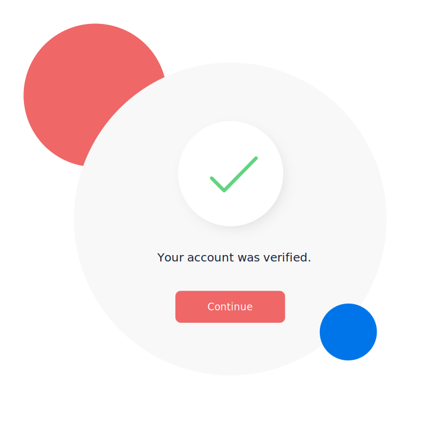
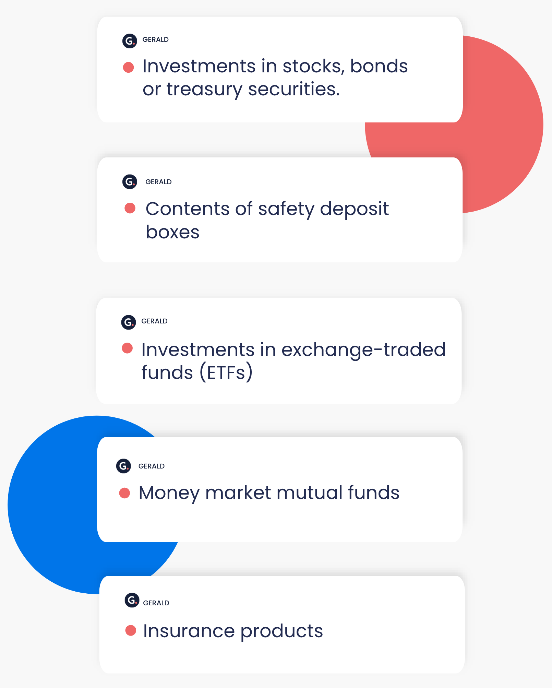
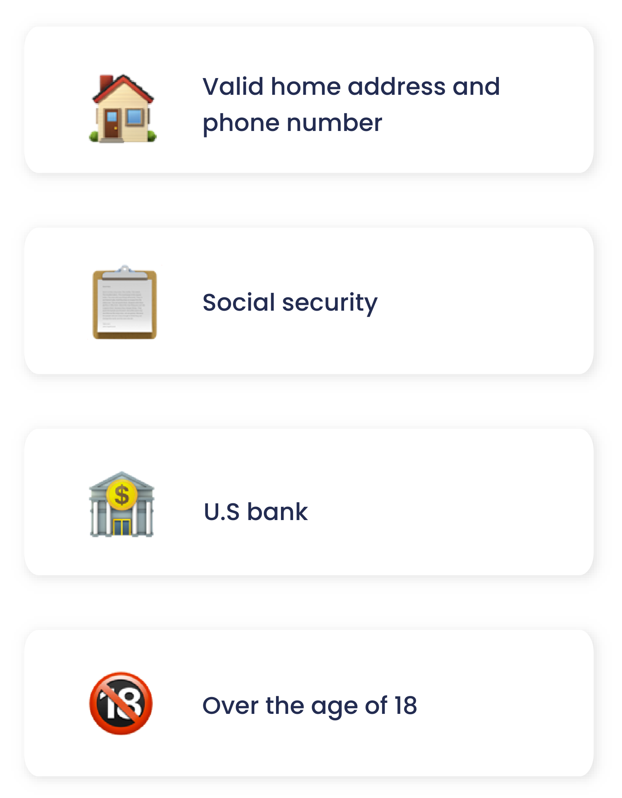
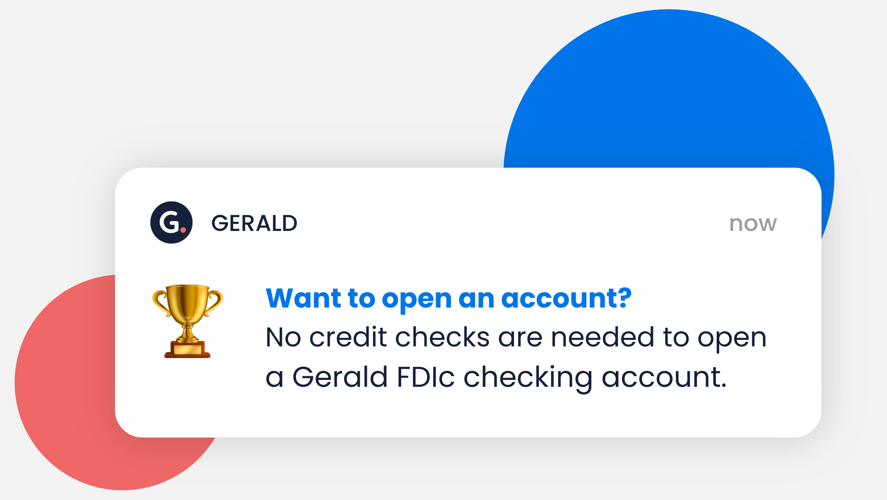
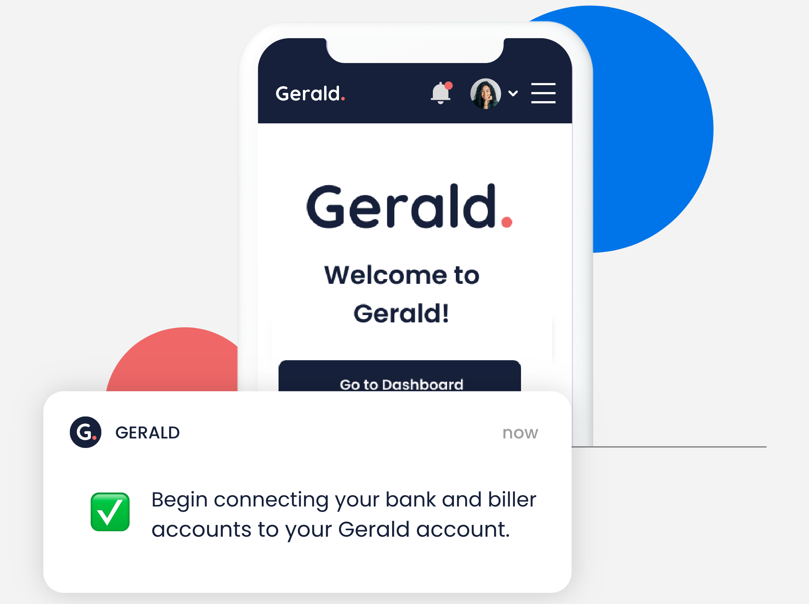

Welcome to family focused banking with Gerald.
Earn cash back and rewards for paying bills with your Gerald FDIC insured checking account (up to
$250,000) and debit card. Never pay an overdraft or late fee again!
We track, manage and make your bill payments for you.

What is FDIC insurance for checking accounts?
The Federal Deposit Insurance Corporation (FDIC) is a federal agency responsible for ensuring bank deposits
of banking customers in the event of banking failures or theft. The maximum amount for an FDIC insured app
and account is $250,000 per depositor.
However, individuals may have multiple checking accounts FDIC insured spread across several banks.
Depositors can verify banks have FDIC insurance for checking accounts by searching for the bank at FDIC.gov.
FDIC insured checking accounts are covered up to $250,000
We offer an FDIC insured app.
Our FDIC insured checking accounts are insured up to $250,000, so families paying household bills with
Gerald do not need to worry about the safety of their money.

Are Gerald FDIC insured checking accounts the same regular checking accounts?
Any money deposited into a Gerald account can be used just like a regular FDIC insured checking account with
one of the major banks.
As a Gerald customer you may deposit or take out your money without any restrictions or fees using our FDIC
insured app. The FDIC insurance for checking accounts comes automatically with every Gerald account.

Are checking accounts FDIC insured?
Yes, FDIC insurance for checking accounts is a real thing.
In fact, FDIC insurance applies to bank accounts with deposited cash inside of them such as:
• Checking accounts (the type of account offered by Gerald) • Savings accounts • Certificates of deposits (CDs) • Money market accounts

What types of accounts are not eligible for FDIC insurance?
Not all account types offered by banks are eligible for FDIC insurance, even though they hold financial
assets and are purchased through a bank.
Types of accounts without FDIC insurance include:

What do I need to open a Gerald account?
To open a Gerald account, you’ll need to meet basic requirements for setting up a bank account.
Here’s what requirements need to be met to get started with Gerald’s FDIC insured app.

Does Gerald require a credit check to open accounts?
No credit checks are needed to open a Gerald FDIc checking account. We made Gerald to be an inclusive
platform for all Americas.
Specifically, we made Gerald to help Americans improve their financial situation even if they have a bad
credit history.
Our platform helps people build back their credit scores by reporting bill payment history to credit bureaus
while ensuring bills are paid on time.

Questions?
No. FDIC insurance for checking accounts does not cover losses caused by theft or fraud. Most banks do
have insurance protecting them against theft and fraud called a blanket bond. Blanket bonds protect banks
from illegal actions and/or unethical behaviour of their employees such as fraud, theft, fire, flooding,
embezzlement, and more.
We do our best to ensure all our customers make their bill payments on time so they are able to improve
their credit scores by sharing their payment history through our credit building app.
No. Deposits are not required to open Gerald FDIC insured checking accounts. However, we do require our
customers to have an active U.S. bank account in order to open FDIC insured checking accounts with us.
Opening a checking account that’s FDIC insured with Gerald is less work than opening an account with a
traditional bank. No need to wait in line and fill out paperwork. You can open an account with us from the
comfort of your home using your mobile device or personal computer through our Gerald mobile banking app.
Here is how you can open an FDIC insured checking account with Gerald:
Opening your Gerald account will only take a few minutes.
Head over to joingerald.com and enter your personal information to complete sign up.
You’ll receive an email confirmation after successfully creating an account.
Download the Gerald mobile application and log in with your account details. Once you are logged in to the
FDIC insured app, you can begin connecting your bank and biller accounts to your Gerald account.
When your bank account is connected to Gerald you can set up automatic direct deposits to gain access to
overdraft protection through instant and advance payments.

🔒
Security & Privacy
Can trusting a technology company with your money be as safe as the banks? Of course. Your money is insured,
and your personal information is well protected inside of your Gerald account.
We use the same AES 256 encryption, SSL, and security audits as the major financial institutions. All
personal information and money flowing through Gerald’s FDIC insured app is encrypted at rest and in
transit.
👌🏽
Good credit scores: Financial bargaining power
Paying bills should be easy. We set out to create a mobile banking app and credit builder giving families
greater financial security and more family time.
No more wasting time logging into multiple applications to pay your bills. Pay them all in one place
automatically with Gerald.
Our Solution
No credit checks. No interest. No hidden fees.
Gerald is on a mission to help one family at a time build a brighter financial future.
Never miss a bill payment again
Get half your paycheck early at anytime to pay bills
Build your credit score
Deposit and withdraw your money at any time
Say goodbye to overdraft and late fees
Earn rewards and cash back
Create an account NOW!
Creating your Gerald account is free and will take no time at all. Get ready for a banking and bill payment
experience made for families looking to secure a brighter financial future.